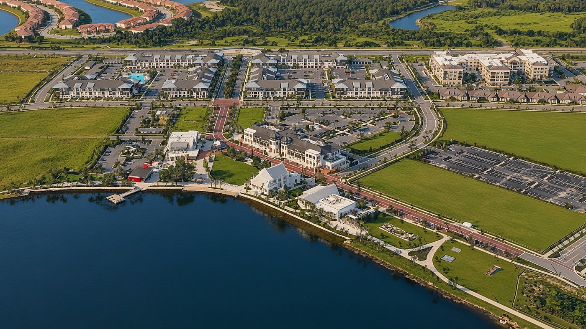

Draft preview for review. Not published. Expand Existing Page for /explore/venice/wellen-park/. Goes live 2026-11-27. Images shown from local copies. Rollout batch
Explore · Wellen Park, Sarasota County
Wellen Park is a new town being built on old ranch land south of Venice, and buying there means comparing builders, neighborhoods, and a special taxing district before you compare floor plans.
Formerly known as the West Villages, the community was renamed Wellen Park in April 2020. Its developer says it covers 11,000 acres and is planned for 22,000 homes at full buildout. Many addresses read Venice, but most of the land sits inside the City of North Port. Here is what our customers ask about Wellen Park homes for sale.
The short version
Big and still growing. 11,000 acres, with 7,000 acres still undeveloped, per the developer.
Mostly new construction. Sixteen builders are listed, from production builders to custom builders.
A special district. Much of the community is inside the West Villages Improvement District, which charges through the tax bill.
A real downtown. Downtown Wellen has an 80-acre activity lake, shops, restaurants, and events.
11,000
acres in the community, per the developer
22,000
homes planned at full buildout
30+
miles of trails so far
16
builders listed by the developer
Source: Wellen Park, Frequently Asked Questions; Wikipedia, Wellen Park.

Downtown Wellen on the Grand Lake.
Location
North Port city limits, Venice mailing addresses.
Wellen Park sits along Florida's Gulf Coast west of I-75, reached from U.S. 41 (Tamiami Trail) and River Road. Depending on the neighborhood, a home is inside the City of North Port or in unincorporated Sarasota County. ZIP codes include 34293 and 34223.
Which side of the city line a home is on affects your property tax millage and which government handles services like police and permits. Check the jurisdiction on the parcel record, not the mailing address.
The land was ranch land for decades. A development partnership bought about 9,600 acres in 2014 and launched the West Villages, and the Atlanta Braves chose the area for CoolToday Park, their spring training complex, in 2017.
Source: Wellen Park FAQ; Wikipedia, Wellen Park history.
Homes
Production, semi-custom, and custom, all in one place.
Wellen Park offers new construction single-family homes, villas, condominiums, townhomes, carriage homes, and coach homes. The developer lists 16 builders, ranging from national production builders to local custom and semi-custom builders, and its FAQ page keeps the current list. Compare at least two builders, plus resales, before you choose.
Golf
Condos, coach homes, and single-family homes around an 18-hole course and clubhouse.
Type
Golf community
55+
Wellen Park's first age-qualified neighborhood with resort-style amenities.
Type
Active adult
Gated
A gated 1,000-acre community with an 18-hole par 72 course, now part of Wellen Park.
Read
In ZIP 34293, which includes much of Wellen Park and older parts of South Venice, the Census Bureau's 2020-2024 survey puts the median owner-reported home value at $411,300 and the median age at 62.3. Resales are part of the market too, especially in neighborhoods that opened in the West Villages years. Compare them with South Venice and Englewood if you want an older, established neighborhood nearby.
Source: Wellen Park FAQ, neighborhoods and builders; U.S. Census Bureau, ACS 2020-2024, ZIP 34293.
Costs
District charges, HOA dues, and builder deposits.
Much of Wellen Park is inside the West Villages Improvement District, an independent special taxing district the Florida Legislature created on June 17, 2004 to provide infrastructure. Its board oversees about 11,000 acres. District charges appear on the property tax bill, and neighborhood HOAs add their own dues.
Not just the millage. Look for non-ad valorem assessments from the District.
District
West Villages Improvement District
Neighborhood dues vary widely with amenities such as golf, pools, and clubhouses.
Deposits, completion dates, upgrades, and who your agent can be.
Our buyer resources and the mortgage calculator help you compare the full monthly cost of a new Wellen Park home with a resale in an older neighborhood.
Source: Wellen Park FAQ, West Villages Improvement District; Wikipedia, WVID.
Daily life
The town center is the selling point.
Downtown Wellen is the community's mixed-use center, with an 80-acre activity lake, restaurants, shops, a stage and event lawn, a food truck park, a splash pad, and children's play areas. Wellen Park counts more than 30 miles of trails, and CoolToday Park hosts Atlanta Braves spring training plus concerts and festivals.
Golf carts and low-speed vehicles are not allowed on the recreational trails, according to the developer, so plan routes before you buy a cart.
Source: Wellen Park FAQ, Downtown Wellen and CoolToday Park.
Schools
Sarasota County schools, plus a campus inside the community.
Wellen Park is in the Sarasota County School District, which earned an A from the state for 2025-26. College Preparatory Academy at Wellen Park, a charter school, and Venice-area district schools such as Taylor Ranch Elementary and Venice High School also earned A grades.
| School | Type | 2025-26 grade |
|---|---|---|
| College Preparatory Academy at Wellen Park | Charter | A |
| Taylor Ranch Elementary School | District | A |
| Venice Middle School | District | A |
| Venice Senior High School | District | A |
Assignment depends on the address. Confirm boundaries with Sarasota County Schools.
Source: Florida Department of Education, 2025-26 School Grades.
FAQs
Where is Wellen Park, Florida?
Wellen Park is a master-planned community in Sarasota County, west of I-75, reached from U.S. 41 (Tamiami Trail) and River Road. Most of it is inside the City of North Port, and some parts are in unincorporated Sarasota County, even though many addresses say Venice.
How big is Wellen Park?
The developer says Wellen Park covers 11,000 acres, including 7,000 acres not yet developed, and is planned for 22,000 homes and more than 60,000 residents at full buildout.
Who builds homes in Wellen Park?
The developer lists 16 builders, from national production builders to local custom builders, and keeps the current list on its FAQ page. Home types include single-family homes, villas, condos, townhomes, carriage homes, and coach homes.
Is Wellen Park a 55+ community?
No. Wellen Park welcomes all ages. It has one age-qualified neighborhood with new homes, Brightmore, plus a 55+ apartment community and a senior living community, according to the developer.
Does Wellen Park have a CDD fee?
Much of Wellen Park is inside the West Villages Improvement District, an independent special taxing district created by the Florida Legislature in 2004. Its charges show up on the property tax bill, so ask for the full tax bill on any home, along with neighborhood HOA fees.
What is Downtown Wellen?
Downtown Wellen is the community's mixed-use center, with an 80-acre activity lake, restaurants, shops, an event lawn, a food truck park, a splash pad, and play areas. CoolToday Park, the Atlanta Braves' spring training complex, is also in Wellen Park.
Touring Wellen Park?
Bring your own agent before your first builder visit. We will compare builders, fees, and resales with you. Call or text The Helgemo Team at (941) 770-2275.
The office is at 320 Cross Street, Punta Gorda, Florida 33950. You can also meet Brian Helgemo or read more about the team.
Sources: Wellen Park, Frequently Asked Questions; Wikipedia, Wellen Park; U.S. Census Bureau, ACS 2020-2024, ZIP 34293; Florida Department of Education, 2025-26 School Grades. Developer figures are the developer's own. Checked November 20, 2026.